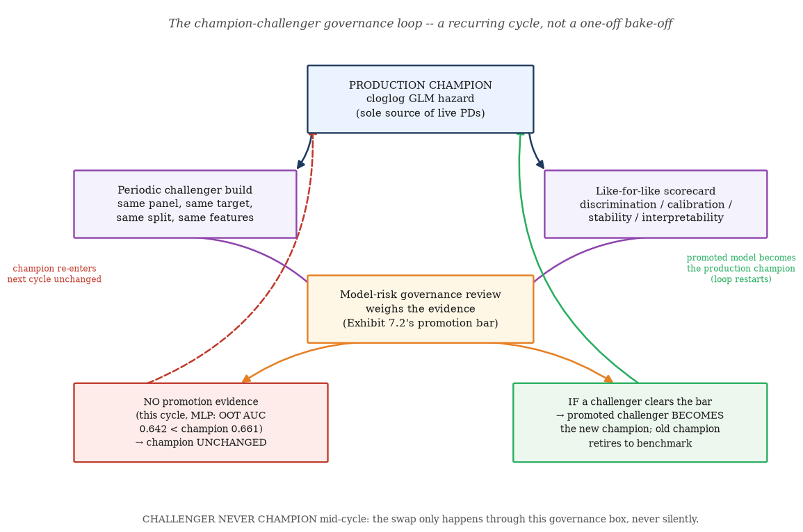
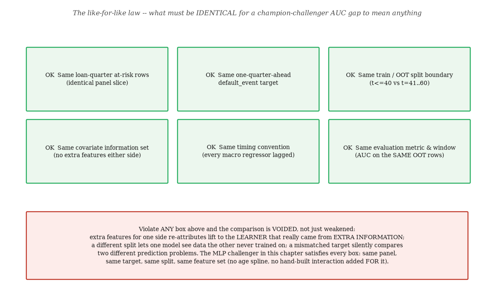
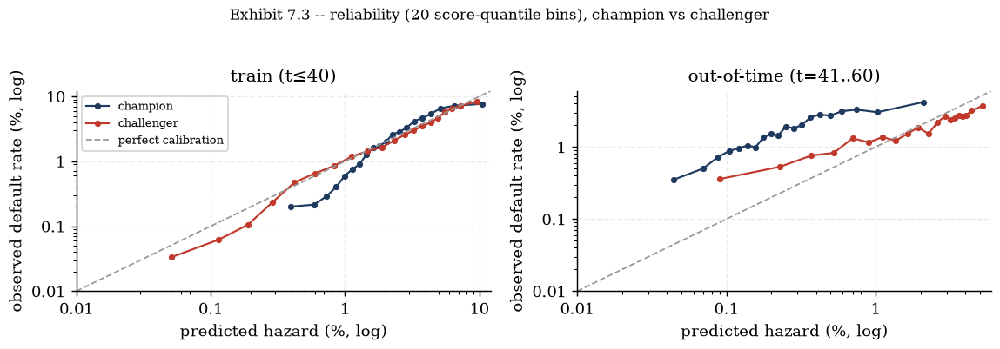
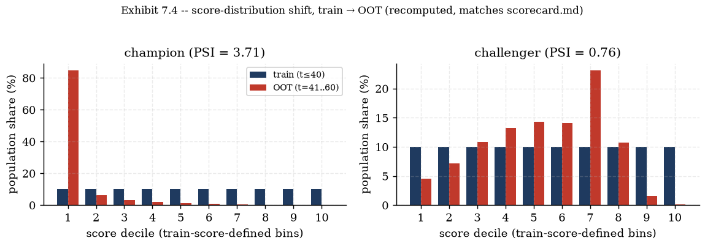
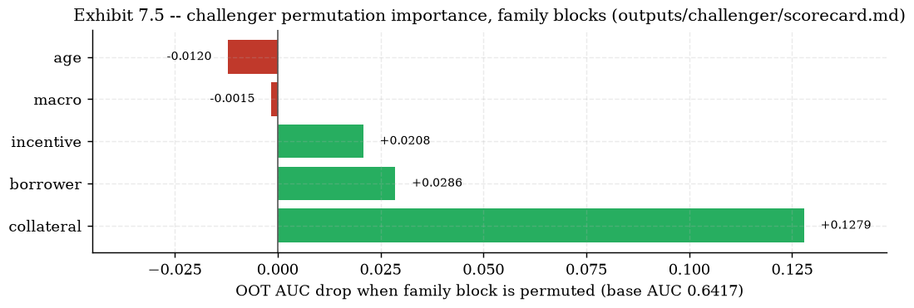
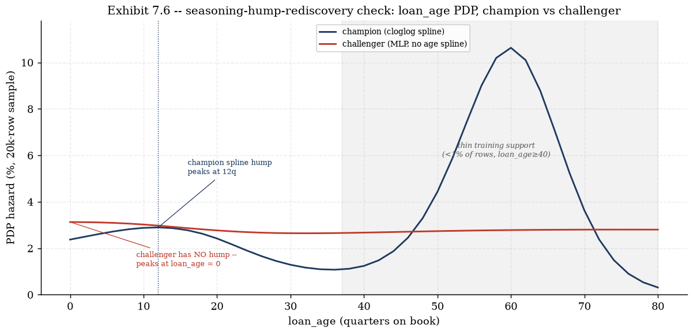

Chapter 7 — Challengers: The Champion-Challenger Governance Pattern
Why a model that loses still earns its keep — the DCR MLP challenger, the like-for-like law, and reading a scorecard honestly
IFRS9 ECL Study-Notes Compendium — Chapter 7 of 13. Compiled from outputs/challenger/scorecard.md, analysis/fit_challenger.py, challenger/mlp.py, engine/hazard.py, tests/fixtures/compute_validation.py, wiki/memory/log.md, and this chapter's own recompute (notes/assets/img/ch07/recompute_challenger_scoring.py) on 2026-07-19.
7 Challengers: The Champion-Challenger Governance Pattern
Chapter 3 built and trusted a cloglog hazard model with a hand-engineered age spline and a
hand-built LTV×unemployment interaction. Every one of those design choices was a human decision — an
analyst deciding that default hazard is non-monotone in loan age, and that collateral risk and macro stress
compound rather than add. This chapter asks the obvious follow-up question a model-risk function is
supposed to ask: if a flexible learner is given the same raw information and no hints, does it find the
same structure on its own? The answer, worked out end to end from a real 621,736-row panel and a real
saved model checkpoint, is genuinely instructive — not because the challenger wins (it does not), but
because of exactly how and why it loses. Source anchor: outputs/challenger/
scorecard.md (all sections); project evidence from analysis/fit_challenger.py,
challenger/mlp.py, and this chapter's own recompute
(§7.4–7.8).
7.1 The champion-challenger governance pattern
Model-risk practice (the discipline behind supervisory guidance such as the Federal Reserve's SR 11-7,
and echoed in IFRS 9's own governance expectations picked up again in Chapter 13) asks for
effective challenge: every production model needs a critical, technically competent,
empowered counter-voice — not a rubber stamp, and not merely a one-off validation memo filed away and
forgotten. A champion-challenger programme operationalises effective challenge as a recurring cycle rather
than a single event.
Definitions.
Champion — the model whose output actually drives the ledger: in this project, the
frozen cloglog hazard from Chapter 3 (engine/hazard.py) is the sole source of
production PDs feeding staging (Chapter 1) and ECL (Chapter 2).
Challenger — an alternative model fit on the identical prediction problem
purely to stress-test the champion's functional-form choices. A challenger's job is to generate evidence,
not to run in production.
Promotion — the (here, hypothetical) governance act of retiring the champion and
replacing it with a challenger that has cleared an explicit evidence bar (§7.2).
Promotion is a deliberate, documented decision — never an automatic consequence of one scorecard.

Exhibit 7.1 — The champion-challenger governance loop: a recurring cycle, not a
one-off bake-off. Regenerated in matplotlib (notes/assets/img/ch07/build_diagrams.py,
conceptual diagram, no underlying data table).
CHALLENGER, NEVER CHAMPION is the load-bearing phrase in scorecard.md's own
opening line, and it means something specific and deliberate: even a challenger that wins a metric
does not change production mid-cycle. The swap, if it ever happens, only happens through the governance box
in Exhibit 7.1 — explicitly, documented, and only after clearing the promotion bar
(§7.2). This project's own challenger, as this chapter shows in detail, does not
come close to clearing it — but the exercise was never really a bake-off to begin with. Its value is in
what it reveals about the champion.
Interpretation — why run the exercise at all if the outcome is "champion unchanged"? A champion built
entirely from hand-engineered structure (a spline here, an interaction there) is only as trustworthy as the
analyst's judgement that put those terms in. A challenger with no hints, fit on the exact same raw
information, is the cheapest available test of that judgement: if the flexible learner independently
rediscovers the spline's hump (§7.8) or the interaction's sign, that is real,
external corroboration of the champion's functional form — evidence the champion's own in-sample fit
statistics cannot provide, because they can never distinguish "this structure is real" from "this structure
is what I told the model to look for".
Gotcha — a challenger existing is not itself evidence of anything. Standing up a second model and
running one scorecard proves only that the exercise was performed, not that anything was learned. The
value is entirely in what the comparison SHOWS: does the flexible model beat the champion, tie it, or lose
to it — and, whichever way it goes, does the way it wins or loses make economic sense
(§7.4)? A challenger that loses cleanly and explicably is a MORE useful governance
artefact than a challenger that wins for reasons nobody can explain.
Check yourself.
Why does "challenger never champion" apply even in a cycle where the challenger's headline metric
beats the champion's?
Answer
Because promotion is a deliberate governance act (Exhibit 7.1's review box), not
an automatic consequence of one number moving the right way — a single scorecard is one piece of evidence,
and §7.2's promotion bar requires several kinds of evidence (repeated OOT windows, bin-level
calibration, operational determinism) that one metric on one cycle cannot supply by itself.
What is the actual point of running a challenger that the project already expects, on priors, might
lose?
Answer
To stress-test the champion's hand-engineered functional-form choices (the age spline,
the LTV×UER interaction) against a model with no hints — a flexible learner independently finding
(or failing to find) the same structure is external corroboration (or a useful negative result) that the
champion's own in-sample fit statistics could never provide.
7.2 What evidence would promote a challenger — the promotion bar
"The challenger scored lower this cycle" is not, by itself, the reason production stays with the
champion — the reason is that nothing on this list was cleared. Listing the bar explicitly is what
turns "challenger never champion" from a slogan into an auditable governance rule.
The promotion bar — what would have to be true.
Repeated, not single-cycle, OOT superiority. An AUC edge that holds across multiple
independent out-of-time windows / vintages, not one scorecard's snapshot — a single OOT AUC delta is
consistent with sampling noise or a lucky regime match, not a structural improvement.
Bin-level calibration, not just a headline mean. Reliability that tracks the diagonal
across the FULL score range, not merely a portfolio-average ratio near 1 — §7.5
shows exactly why a near-1 average can hide a "rotated" curve that is wrong in both directions.
Operational determinism on deployment hardware. The MLP's own documented caveat:
bitwise-reproducible on the SAME device/build, but results differ across CPU vs GPU and torch/CUDA versions
(scorecard.md, "Documented simplifications"). A regulatory PD that silently drifts with a
driver upgrade is a governance liability the champion's deterministic IRLS solver does not carry.
A disciplined tail. The champion's natural cubic spline extrapolates LINEARLY past its
boundary knots — a known, bounded behaviour. The MLP has no equivalent discipline; it is clamped at the
training-support maximum age purely as an accepted default, not a principled tail
(§7.8's bonus finding makes the champion's own tail risk concrete too).
Interpretability sufficient for supervisory explainability — cleared here only in the
weaker sense of permutation importance + PDP (§7.7); the originally planned SHAP
per-prediction attribution was dropped for an engineering reason, not a validation pass.
None of these five are cleared this cycle. Item 1 fails outright: OOT AUC is LOWER, not higher
(§7.4). Item 2 is actively concerning once the bin-level detail is examined
(§7.5). Items 3–4 are open engineering and modelling gaps, not close calls.
Item 5 is a downgrade in tooling, accepted for a documented reason (§7.7), not
evidence in the challenger's favour.
The absence of promotion evidence is itself informative. It does NOT mean the exercise found nothing
— it validates that the champion's hand-built terms are doing real, defensible work rather than being an
arbitrary modelling choice a flexible learner would trivially outperform given the same information. A
governance process that only ever reports "no promotion evidence" cycle after cycle, with a consistent and
explicable reason each time, is a HEALTHY champion-challenger programme, not a wasted one.
Check yourself.
Why is "the challenger's OOT AUC was higher this one time" insufficient to clear the promotion bar's
first item?
Answer
A single out-of-time window is one sample from many possible train/OOT splits; an
edge that shows up once could be sampling noise, or a lucky match between the challenger's fitted
structure and that particular window's regime, rather than a genuine, repeatable improvement — the bar
requires the edge to hold across multiple independent OOT windows before it counts as evidence.
Why does hardware-dependent determinism matter for a REGULATORY probability of default specifically,
more than it might for, say, a marketing recommendation model?
Answer
A regulatory PD feeds directly into staging and the ECL allowance figure that appears
in financial statements — if the same model, on different deployment hardware or a different torch/CUDA
build, produces a materially different PD for the same loan, the allowance itself becomes
non-reproducible in a way that a recommendation ranking's minor instability would not be, which is a
direct audit and governance liability, not just an engineering nuisance.
7.3 The DCR MLP challenger: architecture & the like-for-like law
The challenger is a small feed-forward network (an MLP, multi-layer perceptron) fit on the exact same
loan-quarter panel Chapter 3's champion uses, with the exact same one-quarter-ahead
default_event target.
champion
challenger
form
cloglog GLM, natural cubic spline in age (df=5), centered LTV×UER interaction
The 12 raw inputs are identical to the champion's own information set (engine/hazard.REQUIRED_COLS
): loan_age, FICO_orig_time (as fico_s, /100), the
HPI-indexed updated_ltv (as ltv10, winsorised at the champion's own
LTV_CAP, /10), prepay_incentive, three property-type flags plus an investor flag,
and four LAGGED macro terms (uer_lag1, uer_chg4_lag1, hpi_growth_lag1,
gdp_lag1). What the MLP does not receive is the champion's two hand-engineered
derived terms: the age spline basis and the centered LTV×UER interaction. Whether it finds the age
shape unaided is exactly what §7.8 tests in full, band by band, on this chapter's
own recompute; the analogous rediscovery check for the interaction — scorecard.md's own
"double trigger" PDP finding (LTV-slope steepening under 10% vs 5% unemployment, challenger 0.76× vs
the champion's own in-sample-fitted 0.15×) — is reported in the source scorecard but is NOT
independently re-derived by this chapter's own recompute script, so it is left out of scope here rather
than cited without that verification; see §7.6's cross-reference note for the
other items this build scopes out.

Exhibit 7.2 — The like-for-like law: what must be identical for a
champion-challenger AUC gap to be meaningful. Regenerated in matplotlib
(notes/assets/img/ch07/build_diagrams.py).
Interpretation — the like-for-like law is about the INFORMATION SET, not the functional form. Every
box in Exhibit 7.2 is satisfied: same loan-quarter rows, same target, same train/OOT boundary
(t≤40 vs t=41..60), same 12 raw covariates, same lag/timing convention, same evaluation metric on the
same OOT rows. The champion's spline and interaction are NOT part of the "same features" requirement,
because forcing them onto the MLP would defeat the entire point of the exercise — a linear model handed the
champion's own spline-expanded basis is already most of the way to being the champion; the interesting
question is whether the MLP's hidden layers can construct equivalent nonlinear structure FROM THE RAW
COLUMNS on their own, with no hints. Handing over the engineered terms would answer a different (and much
less useful) question.
The prior-correction detail. Class-weighted BCE (pos_weight = 35.9, correcting the
~2.7% event rate) shifts the fitted logit upward by exactly $\ln(\text{pos_weight})$ relative to the true,
unweighted-population logit — a standard case-control bias-correction result. Predictions therefore apply
$\text{sigmoid}(z-\ln(\text{pos_weight}))$ before use, undoing that shift so the challenger's output is a
properly calibrated hazard, not merely a correctly RANKED score. Every AUC in this chapter is rank-invariant
to this correction (AUC only depends on ordering), but every reliability and PSI number in
§7.5–7.6 depends on getting the correction right.
Gotcha — "same feature list" is not "same feature space". It is tempting to read the like-for-like
law as requiring the champion and challenger to see literally identical DESIGN matrices. They do not: the
champion's design matrix includes a 5-df spline basis and an interaction term the MLP never sees. The law
requires identical information (the same 12 raw loan-quarter facts, no side channel of extra data),
not identical preprocessing — preprocessing choices that encode domain knowledge (the spline, the
interaction) are precisely the thing being tested, and giving them to both sides would erase the test.
Check yourself.
Would handing the MLP the champion's own spline-expanded age basis (instead of raw loan_age)
still satisfy the like-for-like law?
Answer
Formally yes (no new DATA is added, just a different transform of the same raw
loan_age column) — but it would make the comparison uninteresting, because the MLP would no
longer need to discover the hump's shape, only to weight a basis it was handed. The chapter's actual
challenger deliberately withholds the spline for exactly this reason: rediscovering the hump unaided is
the informative test (§7.8), not weighting a pre-built one.
Why does the pos_weight prior correction not affect any of the AUC numbers in §7.4?
Answer
AUC is a purely RANK-based statistic (it only asks whether event rows score higher
than non-event rows) — subtracting a constant, $\ln(\text{pos_weight})$, from every logit before the
sigmoid preserves the ordering of scores exactly, so it can shift where reliability curves and PSI bands
sit (§7.5–7.6) but cannot change any AUC.
7.4 Scorecard read: discrimination (AUC)
One-quarter-ahead default AUC, train (t≤40) and out-of-time (t=41..60), for both models. This
chapter's own recompute (notes/assets/img/ch07/recompute_challenger_scoring.py — champion
refit via engine.hazard.fit_default_hazard, challenger re-scored, not retrained, from
outputs/challenger/mlp_challenger.pt) reproduces every value in scorecard.md to
the 4th decimal.
Worked numbers — recomputed, not retyped.
model
train AUC (t≤40)
OOT AUC (t=41..60)
train−OOT gap
champion
0.7476
0.6609
0.0867
challenger
0.7632
0.6417
0.1214
delta (challenger − champion)
+0.0156
−0.0191
+0.0347
Rounded to the task's own headline framing: champion OOT AUC 0.661 vs challenger OOT AUC
0.642 — the champion wins, and by a margin (1.91 AUC points) larger than the challenger's train-side
edge (1.56 points) is in the other direction.
Interpretation — three reasons the champion wins OOT despite winning nothing on train.
Sample size. 418,418 training rows is not a large sample for an unconstrained
64+32-unit network with dropout and weight decay to fully exploit — a parsimonious parametric model (a
handful of coefficients plus a 5-knot spline) reaches its asymptotic efficiency on far less data than a
network with thousands of free weights needs to reliably separate signal from noise.
Tabular data. This is a well-documented pattern in applied ML: on small-to-medium
tabular panels with a modest number of engineered features, flexible deep networks frequently fail to beat
— and can meaningfully underperform — parametric or tree-based models that already encode domain structure,
particularly out of sample. Nothing about this project's result is anomalous against that broader pattern.
Feature saturation. The 12 raw covariates were ALREADY hand-selected and engineered by
a domain expert to be maximally informative (the HPI-indexed LTV, the lagged macro terms, the prepayment
incentive). Little residual nonlinear structure is left for a flexible learner to find BEYOND what the
spline and interaction already capture — so the MLP's extra flexibility mostly overfits the training
regime rather than discovering new signal.
The train−OOT generalisation-gap column above is the direct evidence for the third point: the
challenger's gap (0.1214) is 40% larger than the champion's (0.0867) — exactly what "the extra flexibility
is spent on overfitting, not new signal" predicts.
Gotcha — the OOT window is a genuinely different macro regime for BOTH models, not just the
challenger. Training runs through the 2008–2010Q1 stress; OOT is the 2010–2015 recovery. Part
of BOTH models' AUC drop from train to OOT reflects that regime shift itself, not model quality — a
champion trained only on calm years would likely also show some OOT degradation. What isolates the model
comparison from the shared regime-shift effect is the DELTA between the two models' drops (the two
generalisation-gap numbers above), not either model's absolute OOT AUC read in isolation.
Check yourself.
The challenger's train AUC (0.7632) beats the champion's (0.7476). Why is this NOT evidence the
challenger is the better model?
Answer
Train-set AUC only measures fit to the data the model was optimised on — a flexible
learner can always fit train data at least as well as a constrained parametric one, including by fitting
noise. The number that matters for a production decision is OUT-OF-TIME performance, where the champion
wins by a larger margin (−0.0191) than the challenger's train-side edge (+0.0156), and the
generalisation-gap comparison shows directly that the challenger's extra train fit does not transfer.
Name two of the three reasons given for why the champion generalises better despite less raw
flexibility.
Answer
Any two of: sample size (a network with many free weights needs more data than a
parsimonious parametric model to reach reliable OOT generalisation); the general tabular-data pattern
(flexible deep nets often do not beat domain-structured models on modest tabular panels); feature
saturation (the 12 raw covariates are already hand-engineered to be maximally informative, leaving little
residual signal for extra flexibility to find).
7.5 Calibration: reliability — champion vs challenger
A reliability diagram bins scored rows into quantiles of predicted hazard and plots each bin's MEAN
predicted hazard against its mean OBSERVED event rate. Perfect calibration sits on the 45-degree diagonal;
points above the diagonal mean the model UNDER-predicts in that bin (observed exceeds predicted), points
below mean it OVER-predicts.

Exhibit 7.3 — Reliability (20 score-quantile bins), champion vs challenger, train
and out-of-time. Regenerated from this chapter's own recompute
(notes/assets/img/ch07/reliability_bins.json).
Worked numbers — three representative OOT bins (of 20), recomputed.
bin
champion pred (%)
champion obs (%)
ratio obs/pred
challenger pred (%)
challenger obs (%)
ratio obs/pred
1 (lowest scores)
0.044
0.350
7.9×
0.091
0.360
4.0×
10 (middle)
0.223
1.450
6.5×
1.932
1.870
1.0×
20 (highest scores)
2.085
4.190
2.0×
5.203
3.710
0.7×
Every ratio is obs/pred computed directly from reliability_bins.json — the champion
under-predicts in EVERY one of its 20 OOT bins (ratios stay above 1 throughout, echoing
scorecard.md's reported bottom/top-quintile read of 8.02×/3.07×); the challenger's
ratio crosses below 1 by the middle bins and stays there through the top bin (echoing the scorecard's
2.04×/0.70× quintile read) — a genuinely different, ROTATED shape, not just a smaller version of
the champion's error.
Interpretation — a book-level mean ratio near 1 is NOT bin-level calibration.scorecard.md's headline numbers (champion under-predicts 4.71× on average; challenger
over-predicts only 1.19× on average) make the challenger sound like the better-calibrated model. The
bin-level table above shows why that headline is misleading taken alone: the challenger's near-1 portfolio
average NETS OFF two opposite-signed errors (under-predicting the low/mid-score book, over-predicting the
top) rather than tracking the diagonal loan-by-loan. On this OOT window, NEITHER model is well calibrated at
the bin level — "the challenger levels better" is true only for the portfolio-mean hazard, and either
model's PD scale would need recalibration before any absolute (non-ranking) use.
Why the champion under-predicts everywhere (a level shift, not a shape problem). Both models were
trained through the 2008–2010Q1 stress and score the 2010–2015 recovery — the OOT window's true
event rate reflects a DIFFERENT macro regime than either model was fit on. A shared level gap across every
bin, as the champion shows, is the macro regime shift showing up uniformly; the challenger's ROTATED curve
(under in some bins, over in others) is the more diagnostic finding, because a pure regime shift alone would
not explain a sign FLIP across the score range.
Interactive: reliability-curve comparator
Toggle each model on/off and switch between the train and out-of-time splits — every point plotted below
is the SAME 20-bin recomputed data tabulated above and charted in Exhibit 7.3 (linear axes here, rather
than the exhibit's log-log, for direct visual comparison against the diagonal at typical portfolio scale).
Live widget — reliability-curve comparator (real 20-bin data, this chapter's own recompute)
Gotcha — "well calibrated on average" and "well calibrated" are different claims. A model whose
book-level predicted total equals its book-level observed total can still be badly mis-calibrated at the
loan level, systematically over-pricing some segment of the book and under-pricing another by an equal and
offsetting amount. Any absolute (not just rank-ordering) use of a PD — ECL itself, most obviously — is
exposed to this even when a single summary ratio looks reassuring; the fix is always to check calibration
bin-by-bin (or segment-by-segment), never by the portfolio mean alone.
Check yourself.
Toggle only the challenger on, OOT split. At the top bin, is the challenger over- or under-predicting?
Answer
Over-predicting — the top OOT bin has predicted hazard 5.20% against observed 3.71%
(ratio 0.7×, below 1), consistent with the "rotated" shape: the challenger under-predicts the
low/mid-score book and over-predicts the highest-score decile.
Why does the champion's curve sit almost exactly on the diagonal in the TRAIN panel but well above it
in the OOT panel?
Answer
Train-panel calibration is nearly automatic for a maximum-likelihood GLM fit on that
same data (the IRLS fitting procedure directly targets in-sample calibration as part of the likelihood) —
it says little about out-of-sample behaviour. The OOT gap appears because the fitted coefficients (and the
macro regime they were tuned to) no longer match the out-of-time population's true event rate, which
reflects the 2010-2015 recovery rather than the 2008-2010Q1 stress the model was fit on.
7.6 Stability: PSI, train→OOT
The Population Stability Index (PSI) measures how much a score DISTRIBUTION has shifted between two
populations — here, the training-time score distribution vs the out-of-time score distribution, for each
model separately.
Derivation — PSI's band-by-band formula, from its KL-divergence motivation.
1.Motivation. For two discrete distributions
$P$ (a baseline/expected population) and $Q$ (a current/actual population) split into the same $n$ bands with
shares $p_i,q_i$, the Kullback–Leibler divergence $D_{KL}(Q\Vert P)=\sum_i q_i\ln(q_i/p_i)$ measures how
surprised you'd be seeing $Q$'s data if you expected $P$. PSI SYMMETRISES this into
$PSI=D_{KL}(Q\Vert P)+D_{KL}(P\Vert Q)=\sum_i(q_i-p_i)\ln(q_i/p_i)$, so a band's contribution is unchanged
under swapping which population is "expected" and which is "actual" — a deliberate, practically-motivated
departure from KL's asymmetry.
2.The band formula. Writing Expected$_i$ for
the baseline (development/train) share and Actual$_i$ for the current (out-of-time) share in band $i$:
$$ PSI = \sum_{i=1}^n \big(\text{Actual}_i-\text{Expected}_i\big)\,\ln\!\left(\frac{\text{Actual}_i}{\text{Expected}_i}\right). $$
Each term is non-negative (a real number times its own log-ratio against a positive baseline has the same
sign as the log-ratio itself when the two shares agree in direction of deviation — formally, $(a-b)\ln(a/b)
\ge 0$ for any $a,b>0$, with equality iff $a=b$), so PSI is itself always $\ge 0$, zero only when the two
distributions match exactly band-for-band.
Cross-reference.notes/plan/derivation_backlog.md formally assigns this
band-by-band PSI derivation (D-10) to this chapter, but Chapter 3 §3.9 expanded it first (the same
KL-divergence motivation, the same toy fixture below) — see that section's own "Scope note" for why, and its
explicit instruction that a later Chapter 7 build should apply the machinery to a live scorecard rather
than re-derive the toy example from nothing. It is reproduced here, band-by-band, only because this chapter
is currently built as a standalone file (not yet spliced into the one-file compendium where a reader could
simply follow the cross-link) — Worked example 2 below is this chapter's actual net-new
contribution: the identical formula applied to this chapter's own real, recomputed champion/challenger
scores. (Chapter 3 §3.10 similarly already covers D-9, the binomial-exact/Jeffreys backtest
derivation, applied there to the champion's PD grades; this chapter does not re-apply it to the challenger's
grades or add a swap-set staging comparison — both are scoped out of this build and remain open items against
the campaign's original Ch.7 learning goals.)
Worked example 1 — the backlog's toy fixture, every band shown (tests/fixtures/
compute_validation.py). Five bands, development shares $[0.10,0.25,0.30,0.25,0.10]$ vs current
$[0.06,0.20,0.30,0.28,0.16]$:
band
Expected
Actual
Actual−Expected
ln(Actual/Expected)
term
1
0.10
0.06
−0.04
ln(0.6)=−0.5108
0.0204
2
0.25
0.20
−0.05
ln(0.8)=−0.2231
0.0112
3
0.30
0.30
0.00
ln(1.0)=0
0.0000
4
0.25
0.28
+0.03
ln(1.12)=0.1133
0.0034
5
0.10
0.16
+0.06
ln(1.6)=0.4700
0.0282
$PSI=0.0204+0.0112+0.0000+0.0034+0.0282=\mathbf{0.0632}$ — under the conventional 0.10 threshold, so this toy
population is formally stable. Every term above matches
tests/fixtures/compute_validation.py's psi_term_band1..5 and psi_total
to the source's displayed 4-decimal precision.
Worked example 2 — the SAME formula applied to the real champion/challenger scores.
This chapter's own recompute (notes/assets/img/ch07/recompute_challenger_scoring.py) bins each
model's train (t≤40) and OOT (t=41..60) scores into 10 train-score-defined deciles — the same
N_PSI_BINS=10 convention analysis/fit_challenger.py uses — and applies the boxed
formula above band by band. Two representative bands, champion:
$$ \text{band 1: } (0.84948-0.10000)\times\ln(0.84948/0.10000) = 0.74948\times 2.13945 = 1.6035 $$
$$ \text{band 10: } (0.000575-0.100000)\times\ln(0.000575/0.100000) = -0.099425\times(-5.15855) = 0.5129 $$
Summing all 10 bands: champion $PSI=\mathbf{3.7105}$; challenger (same procedure, its own scores)
$PSI=\mathbf{0.7634}$ — both reproduced bitwise-matching scorecard.md's reported 3.711 / 0.763.

Exhibit 7.4 — Score-distribution shift, train → OOT, both models. Regenerated
from this chapter's own recompute (notes/assets/img/ch07/psi_bands.json); matches
scorecard.md's PSI totals exactly.
Interpretation — this PSI is measuring the credit CYCLE moving through the scores, not model
instability. Training ends exactly at the unemployment peak (t=40, 2010Q1); OOT is the 2010–2015
recovery. A large train→OOT PSI here is EXPECTED and, for a model with genuine macro sensitivity,
arguably CORRECT behaviour — the whole reason Chapter 5's Vasicek framework and this project's
point-in-time PD philosophy exist is for scores to move with the cycle. The champion's much larger PSI
(3.71 vs 0.76) reflects its STRONGER explicit macro response (the hand-built LTV×UER interaction
responds sharply to the stress-to-recovery transition): its stress-quarter score mass — nearly 85% of the
OOT population lands in the champion's LOWEST training decile — has nowhere else to go once the macro
inputs recover, echoing the composition-vs-cycle caution this project's own wiki records for similar
diagnostics elsewhere. A bigger PSI is not, by itself, evidence of a defect in either model.
The standard PSI thresholds (<0.10 stable / 0.10–0.25 monitor / >0.25 material shift) assume
the underlying POPULATION is stationary. Worked example 1's toy fixture implicitly assumes that;
worked example 2's real population does not — the macro regime itself genuinely moved between train and
OOT. Both real PSI values here (3.71 AND 0.76) sit far outside the "stable" band even though nothing is
necessarily wrong with either model. Reading a PSI number mechanically against the standard thresholds
without first checking WHETHER the underlying population actually should have stayed put is the single most
common PSI misreading — the number always needs the "why" attached.
Gotcha — a SMALLER PSI is not automatically "better" here. It would be a mistake to read the
challenger's smaller PSI (0.76 vs 3.71) as "more stable, hence more trustworthy" in this context — a smaller
train→OOT score shift for a model that is SUPPOSED to be macro-sensitive can equally mean it is
under-responding to a real, large macro move, which is exactly what §7.5's
low/mid-score-book under-prediction pattern independently suggests. PSI answers "how much did the score
distribution move", never "was that move the right amount" — that second question needs the reliability
read, not PSI alone.
Check yourself.
In worked example 1's band 3, why is the PSI term exactly zero?
Answer
Expected and Actual are both 0.30 in that band — Actual−Expected = 0 makes the
whole product zero regardless of the log-ratio term (which is $\ln(1)=0$ anyway), consistent with PSI
being zero exactly where the two distributions agree.
Why does the champion's much larger PSI NOT settle the question of which model is "more stable" in a
useful sense?
Answer
Because the underlying population's macro state genuinely shifted between train and
OOT (stress to recovery) — a model with a strong, intended macro response is EXPECTED to show a large
score-distribution shift under that condition, so a large PSI here is at least partly a sign the model
behaves as designed. The champion's larger PSI needs to be read alongside §7.5's calibration
evidence (does the shift move the RIGHT amount), not treated as a stand-alone stability failure.
7.7 Interpretability for nonlinear models: permutation importance, PDP, and the SHAP-dropped decision
A GLM's coefficients are self-interpreting (Chapter 3's hazard-ratio reading applies directly). An
MLP's weights are not — interpretability has to be reconstructed from the model's INPUT-OUTPUT behaviour
rather than read off its parameters.
Definitions.
Permutation importance — for a fitted model and a held-out set, randomly shuffle
(permute) one feature (or a block of features) across rows, breaking its relationship with the target while
leaving its marginal distribution untouched, and measure how much the evaluation metric (OOT AUC here)
drops. A large drop means the model relied heavily on that feature's information.
Partial dependence (PDP) — for one feature, sweep it across a grid of values, holding
every OTHER feature at each row's own observed value, and average the model's prediction over a background
sample at each grid point. The resulting curve shows the model's average MARGINAL response to that one
feature, integrating out the rest.
Two design choices in how permutation importance is applied here matter for reading the numbers
correctly. First, features are permuted as JOINT FAMILY BLOCKS as well as individually:
uer_lag1 (the macro level) and uer_chg4_lag1 (its 4-quarter momentum) correlate at
0.94 — permuting either ALONE lets the model partially reconstruct the shuffled feature's signal from its
near-duplicate, understating the pair's TRUE joint importance. Permuting both together removes that escape
hatch. Second, every reported drop is the mean of 3 independent permutation repeats (base OOT AUC 0.6417).

Exhibit 7.5 — Challenger permutation importance, family blocks. Regenerated from
outputs/challenger/scorecard.md's published family-block table.
top single feature
family
OOT AUC drop
ltv10
collateral
+0.1283
fico_s
borrower
+0.0281
prepay_incentive
incentive
+0.0200
uer_chg4_lag1
macro
+0.0061
hpi_growth_lag1
macro
+0.0057
Source: outputs/challenger/scorecard.md "What drives the challenger" table.
Interpretation — "collateral" is a macro channel in disguise. The near-zero drop for the aggregate
[macro] block (−0.0015, i.e. permuting it barely moves OOT AUC at all) does NOT mean the challenger
ignores the credit cycle. ltv10 is built from updated_ltv — the borrower's LTV
INDEXED to the current local HPI (Chapter 4's structural-LGD framing) — so the house-price cycle
already reaches the model through this loan-level state variable. The aggregate lagged macro regressors add
little ON TOP of what indexed LTV already encodes; that is a statement about where the marginal
information sits, not about whether the model responds to macro conditions at all.
Gotcha — permutation importance without family blocking systematically UNDER-states correlated
features. If uer_lag1 and uer_chg4_lag1 had been permuted one at a time, each
individually-measured drop would be smaller than either feature's TRUE contribution, because the model can
partly recover the shuffled feature's signal from its 0.94-correlated partner that is still intact. This is
a general property of naive (single-feature) permutation importance, not specific to this model — always
check whether a feature has a near-duplicate before trusting its individual importance score.
The SHAP-dropped decision — an engineering-tradeoff lesson
The original project plan called for SHAP (Shapley-value attribution) alongside the MLP challenger and
out-of-time scorecard. It was dropped during Day 3 of the build, recorded verbatim in the project's own
handoff memory:
Recorded decision. "Torch from PyPI (cu126 index TLS-blocked; decision), shap dropped
(numba/np2.5 conflict; permutation importance+PDP instead)." — wiki/memory/log.md, Day 3
handoff entry.
SHAP's exact-computation paths pull in numba as a transitive dependency for JIT-compiled
kernels; numba pins compatible numpy versions tightly, and lagged behind this
project's numpy 2.5 pin at build time. The available options were: downgrade numpy PROJECT-WIDE (risking
every other module that had already been built and gated against numpy 2.5), pin an older
SHAP/numba/numpy combination in an isolated environment (adding a second dependency universe to maintain),
or substitute a dependency-light alternative that answers the chapter's actual question. The project chose
the third option.
Interpretation — the engineering tradeoff, stated plainly. Permutation importance + PDP are strictly
WEAKER than SHAP along one real axis: no per-prediction (single-loan) attribution, and no interaction-aware
decomposition of a Shapley value's kind. They are strictly STRONGER along another: pure numpy/sklearn/scipy,
zero new dependency conflicts, fully inside the environment every other module already runs in. For this
chapter's actual question — does the challenger recover the SAME aggregate structure the champion's
hand-built terms encode, not "explain any one loan's individual score" — the weaker, dependency-light tool
is sufficient. A different question (e.g. "why did THIS specific loan get flagged") would have justified
paying SHAP's dependency cost; this one did not.
Check yourself.
Why does permuting uer_lag1 and uer_chg4_lag1 together (rather than
separately) give a more honest importance measurement?
Answer
The two features correlate at 0.94 — permuting only one leaves its near-duplicate
intact, letting the model partially reconstruct the broken feature's signal from the surviving correlated
one, which understates the true joint importance. Permuting both simultaneously removes that escape route,
giving a measurement of the pair's combined contribution rather than an artificially small individual one.
Was dropping SHAP a validation failure or an engineering tradeoff? What is the concrete difference
permutation importance + PDP cannot provide that SHAP could have?
Answer
An engineering tradeoff, explicitly recorded (not a silent gap) — driven by a
numba/numpy version conflict, not by any finding that SHAP was inappropriate for the model. The concrete
capability lost is per-prediction (single-loan) attribution and Shapley-style interaction decomposition;
what remains (aggregate feature/family-level importance and average marginal response curves) is
sufficient for this chapter's aggregate-structure question but would not answer "why did this one loan's
score change".
7.8 The seasoning-hump-rediscovery check
The champion's age effect is a DELIBERATE, hand-built natural cubic spline (df=5) — encoding the analyst's
prior that default hazard rises then falls with loan age (the "seasoning hump", first introduced in
Chapter 3's empirical hazard-by-age exhibit, peaking around 10–12 quarters on book). The
challenger receives raw loan_age as a single unconstrained input, with no spline basis, no
monotonicity constraint, no hint of any hump. If the hump is a real structural feature of the DATA rather than
an artefact of the champion's chosen basis, a sufficiently flexible learner given the same raw information
should, in principle, rediscover it unaided.

Exhibit 7.6 — Seasoning-hump-rediscovery check: loan_age partial
dependence, champion vs challenger, on a fixed-seed 20,000-row training sample. Regenerated from this
chapter's own recompute (notes/assets/img/ch07/age_pdp.json).
Result: it does not rediscover the hump. The champion's PDP peaks at loan_age = 12 quarters
(hazard 2.90% at the peak vs 2.37% at age 0 — a genuine local hump, matching Chapter 3's spline
specification), then declines through age 36. The challenger's PDP is HIGHEST at
loan_age = 0 (3.13%) and never rises above that value again in the well-supported range — no hump
at all. This is directly consistent with §7.7's permutation-importance finding:
permuting the age family block actually IMPROVES OOT AUC very slightly (−0.0120 drop, i.e. a small
negative number — the model barely leans on age, and what little it does use does not help OOT).
Interpretation — a genuinely informative negative result, not evidence the hump is fake. The
champion's spline is fit with its OWN dedicated identification machinery: a 5-degree-of-freedom basis
targeting the age–hazard relationship specifically, with the rest of the design held to its own
(largely linear) terms. The MLP's cross-sectional architecture, given the same raw age column buried among
11 other features and only ~418k training rows, does not reconstruct the same curvature on its own within
this data regime. That says something real about what an UNCONSTRAINED, purely cross-sectional network needs
— more data, an explicit inductive bias (e.g. a monotonic or spline layer), or a sequence-aware architecture
that can use TEMPORAL order rather than treating loan_age as just another numeric column — not
that the hump itself is an artefact of the champion's chosen basis. Chapter 3's own empirical
(non-parametric) hazard-by-age exhibit is the independent evidence that the hump is real; this section shows
that a flexible-but-unconstrained cross-sectional learner does not find it for free.
Bonus finding from this chapter's own recompute: the champion's tail is not as disciplined as the
promotion-bar item 4 (§7.2) implied at face value. Extending the PDP grid to the
full 0–80 quarter range (shaded region, Exhibit 7.6) shows the champion's natural spline rising to
a SECOND, much larger peak (10.6%) around age 60 before falling away again — a training-support artefact,
not a real seasoning effect: only 0.77% of training rows have loan_age ≥ 40, and only 0.17% have
loan_age ≥ 60 (this chapter's own panel query). "Extrapolates linearly past the boundary knots"
(the champion's documented tail behaviour) is a bounded, known failure mode — but it is still a failure mode,
and this recompute makes its magnitude concrete rather than asserted. Neither model has a genuinely
disciplined tail at very high loan ages; the champion's is merely a KNOWN and BOUNDED one.
Check yourself.
What would it have meant, for the champion's spline specification, if the MLP HAD independently
reproduced a hump peaking near 10–12 quarters?
Answer
It would have been strong external corroboration that the seasoning hump is a real
structural feature of the default-hazard-vs-age relationship in this data, discovered independently by a
model with no hint of the champion's chosen basis — exactly the kind of evidence Section 7.1 argues a
champion-challenger exercise exists to generate, distinct from and stronger than the champion's own
in-sample fit statistics.
Does the MLP's failure to find the hump mean Chapter 3's spline specification is wrong?
Answer
No — it means an unconstrained, purely cross-sectional MLP with ~418k training rows
and no inductive bias toward the age dimension does not reconstruct the shape unaided in THIS data regime;
it says nothing directly about whether the hump itself is real (Chapter 3's own non-parametric empirical
hazard-by-age exhibit is the actual evidence for that, independent of this challenger exercise).
Why does the "thin training support past loan_age=40" finding matter for the champion, not just the
challenger?
Answer
Because the champion's own natural spline is shown (Exhibit 7.6, shaded region) to
swing up to a much larger, training-support-driven second peak in that thin-data region — a concrete
demonstration that "the champion extrapolates linearly past its boundary knots" is a real, bounded risk in
this model too, not just an MLP weakness; it is bounded and documented for the champion, but it is not
absent.
7.9 Interactive: AUC intuition — score separation → live ROC
Every AUC number in this chapter (0.6609, 0.6417, and the rest) is a single scalar summarising an entire
ROC curve. This section builds the intuition for what that scalar actually MEANS in terms of how separated
two score distributions are, using the simplest case with a clean closed form: two Gaussian score
distributions of equal variance.
Proposition (Mann-Whitney / concordance interpretation of AUC). For a binary classifier's scores,
$AUC = P(S_1 > S_0)$ — the probability that a RANDOMLY drawn positive (event) row scores strictly higher
than a randomly drawn negative (non-event) row, drawn independently. (Ties count as one-half; not derived
here — a standard result connecting the ROC curve's area to the rank-sum/Mann-Whitney $U$ statistic.)
Derivation — the closed form for two Gaussian score distributions.
1.Setup. Let non-event scores
$S_0\sim N(0,1)$ and event scores $S_1\sim N(d,1)$, independent of each other, where $d\ge 0$ is the
standardised mean separation (Cohen's $d$, using a common unit variance) — the widget's slider.
2.Reduce to one normal. By the
Proposition, $AUC=P(S_1>S_0)=P(S_1-S_0>0)$. Define $D:=S_1-S_0$. Since $S_1,S_0$ are independent normals,
$D$ is normal with $\mathbb{E}[D]=\mathbb{E}[S_1]-\mathbb{E}[S_0]=d-0=d$ and (independence:
$\mathrm{Cov}(S_1,S_0)=0$) $\mathrm{Var}(D)=\mathrm{Var}(S_1)+\mathrm{Var}(S_0)=1+1=2$. So
$D\sim N(d,2)$.
3.Standardise and evaluate.
$$ AUC = P(D>0) = P\!\left(\frac{D-d}{\sqrt2} > \frac{-d}{\sqrt2}\right) = 1-\Phi\!\left(\frac{-d}{\sqrt2}\right). $$
Using the standard-normal symmetry $1-\Phi(-x)=\Phi(x)$:
$$ \boxed{\,AUC = \Phi\!\left(\frac{d}{\sqrt2}\right)\,} $$
— larger separation $d$ between the two score distributions maps monotonically to a larger AUC, with
$d=0$ (identical distributions) giving $AUC=\Phi(0)=0.5$ exactly, as it must for a completely uninformative
score.
Worked example — inverting the formula for this chapter's own AUCs. $d=\sqrt2\,\Phi^{-1}(AUC)$, computed
in Python (scipy.stats.norm.ppf):
AUC
implied separation $d$
champion OOT, 0.6609
0.5868
challenger OOT, 0.6417
0.5134
Both models' OOT scores separate defaulters from non-defaulters by well under one pooled standard deviation
— consistent with one-quarter-ahead default being a genuinely hard prediction problem even for the WINNING
model; the champion's edge (0.6609 vs 0.6417 AUC) corresponds to a separation only 0.073 standard deviations
larger than the challenger's, a small but, per §7.4, consistent edge.
Live widget — drag the separation slider
Correctness check. The widget computes AUC TWO independent ways at every slider position — the
closed form $\Phi(d/\sqrt2)$, and trapezoidal integration of the numerically swept ROC curve itself — and
displays both in the readout box below the plot; they agree to within numerical-integration error at every
setting, the same style of dual cross-check Chapter 5 uses for the Vasicek anchor property.
Gotcha — real score distributions are never exactly Gaussian, and this widget does not claim they are.
The clean closed form $\Phi(d/\sqrt2)$ is a teaching device for building intuition about the RELATIONSHIP
between separation and AUC, not a claim that the champion's or challenger's actual score distributions are
Gaussian (Exhibit 7.3's reliability curves and Exhibit 7.4's PSI histograms show they plainly are
not). The inverted $d$ values in the worked example above are a useful SUMMARY of "how much separation would
a Gaussian model need to reach this AUC", not a literal description of either model's score shape.
Check yourself.
What AUC does $d=0$ give, and why does that have to be the answer for a completely uninformative
classifier?
Answer
$AUC=\Phi(0)=0.5$ — with zero separation, the two score distributions are identical,
so a randomly drawn event and non-event row are equally likely to score higher than each other by
symmetry, giving exactly a 50% chance the event scores higher, which is the definition of AUC=0.5 (pure
chance, no discrimination).
In the derivation's step 2, why is $\mathrm{Var}(D)=\mathrm{Var}(S_1)+\mathrm{Var}(S_0)$ rather than
$\mathrm{Var}(S_1)-\mathrm{Var}(S_0)$, given $D$ is defined as a DIFFERENCE?
Answer
Variance of a difference of INDEPENDENT random variables always adds the variances
(never subtracts): $\mathrm{Var}(S_1-S_0)=\mathrm{Var}(S_1)+\mathrm{Var}(-S_0)=\mathrm{Var}(S_1)+
\mathrm{Var}(S_0)$ since $\mathrm{Var}(-X)=\mathrm{Var}(X)$, and independence makes the covariance cross
term zero — subtracting variances would be wrong regardless of whether the random variables themselves
are being subtracted or added.
This chapter's MLP asked a narrow, rigorously like-for-like question: given the EXACT SAME 12 raw
covariates the champion uses, does a flexible cross-sectional learner find the same structure? Chapter 12
runs a structurally different challenger experiment against the Freddie Mac SFLLD hazard baseline (AUC
0.8536 train / 0.6847 OOT): an LSTM (sequence model) given each loan's trailing 24-month DELINQUENCY-PATH
history — a feature the champion hazard does not use AT ALL, not merely uses less flexibly. The result there
is dramatic (LSTM OOT AUC 0.9925, a +0.3078 delta) precisely BECAUSE it is not a like-for-like comparison in
this chapter's sense: the champion is architecturally blind to delinquency-path memory, so the LSTM's edge
measures "does path memory add signal beyond the champion's covariate set", not "can a flexible learner find
the same structure from the same information" — a different question, with a correspondingly different
kind of answer (concentrated almost entirely in loans with a prior delinquency spell: +0.3872 AUC there vs
−0.0098 on clean-history loans). See Chapter 12 for the full lift-decomposition treatment and its
own COVID/forbearance caveat; both challenger exercises share this chapter's governance pattern (Exhibit
7.1's loop applies uniformly) even though their underlying scorecard questions differ.
Source: outputs/freddie/lstm/lstm_report.md sections 1 and 3 (headline AUC and
lift-split tables) — cited here only for the forward pointer; not re-derived in this chapter.
End of Chapter 7. Next: Chapter 8 — The Agent (LangGraph Copilot).